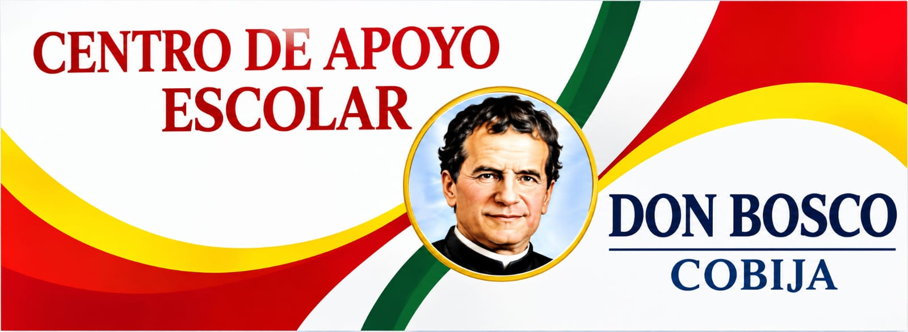

01
En la educación
Formación en distintas etapas.
- Educación regular
- CEAs
- Institutos superiores
- Universidad
El Centro de Formación Don Bosco de Cobija acompaña a niños, niñas, adolescentes y jóvenes con apoyo escolar, formación digital y asistencia pedagógica.

Además de la formación que ofrece el Centro en Cobija, la presencia salesiana desarrolla su trabajo en áreas educativas, pastorales y comunitarias.
La obra salesiana también está presente en la red de hogares de Proyecto Don Bosco, ampliando sus espacios de acompañamiento a la comunidad.
El 7 de febrero de 2025, los Salesianos de Don Bosco inauguraron un Centro de Apoyo Escolar en Cobija, en el barrio Roberto Rojas, para fortalecer la educación y el acompañamiento de niños, niñas, adolescentes y familias.
La sala de computación fue habilitada para estudiantes de secundaria, con herramientas que apoyan las clases de informática y tecnología.
El proyecto contempla acompañamiento a más de 100 familias y medidas de accesibilidad. Su realización fue posible gracias al trabajo conjunto de salesianos, laicos, OFPROBOL, JUWE y la Inspectoría Salesiana de Bolivia.
Datos referidos a la inauguración de 2025. Leer la nota oficial de Salesianos Bolivia.
La presencia del Centro de Formación Don Bosco de Cobija forma parte de una historia salesiana más amplia, nacida en Turín y extendida hasta Bolivia.
Los Salesianos de Don Bosco, formalmente Sociedad de San Francisco de Sales y con siglas SDB, son una congregación religiosa católica formada por sacerdotes y hermanos laicos.
La congregación toma su nombre de San Francisco de Sales, elegido como modelo por su amabilidad y espíritu evangelizador.
“Ser en la Iglesia de Bolivia signos y portadores del amor de Dios a los jóvenes, especialmente a los más pobres.”
“Como Don Bosco, en este sexenio queremos ser una comunidad Inspectorial que vive su consagración a Dios, acompañando a los jóvenes en su maduración cristiana, en corresponsabilidad con los laicos.”
En Turín, Italia, San Juan Bosco inició su labor con jóvenes pobres y fundó en 1859 la Congregación de los Salesianos para educarlos y evangelizarlos.
La primera expedición misionera a América, con destino a Argentina, inició una expansión internacional que multiplicó escuelas, talleres y oratorios.
La Familia Salesiana está presente en más de 130 países y guía a la juventud mediante el Sistema Preventivo, basado en la razón, la religión y el amor.
El padre Santiago Costamagna pisó suelo boliviano en julio de 1890. Su visita exploratoria inició las gestiones para una futura fundación.
En Turín se firmó un contrato entre el Gobierno de Bolivia y el padre Miguel Rúa para fundar dos escuelas técnicas de Artes y Oficios.
Un contingente de 14 salesianos llegó finalmente a la ciudad de La Paz después de partir desde Valparaíso y cruzar la frontera por Uyuni y Oruro.
Los Salesianos de Don Bosco se organizan en Inspectorías, también llamadas provincias: divisiones territoriales que coordinan comunidades, colegios, parroquias y obras sociales.
Está bajo la protección de Nuestra Señora de Copacabana y está conformada por sacerdotes y hermanos laicos.
Cuenta con una comunidad religiosa salesiana a nivel departamental.
Tiene un director y un representante legal para acompañar su misión y organización.
Contenido histórico proporcionado para esta página. Referencias compartidas: Salesianos Bolivia y Infodecom.
Dos caminos de acompañamiento para fortalecer conocimientos, confianza y nuevas oportunidades.
Aprende y fortalece tus habilidades digitales en un espacio de formación pensado para responder a las necesidades de la comunidad.
Solicitar informaciónUn apoyo cercano para orientar procesos de aprendizaje, resolver dudas y avanzar con mayor seguridad en los desafíos educativos.
Consultar atenciónLa obra salesiana en Cobija articula apoyo escolar, formación tecnológica y acompañamiento para niños, niñas, adolescentes, jóvenes y familias.
Solicitar informaciónPersonas contempladas por el apoyo educativo en el barrio Roberto Rojas.
Familias beneficiadas por el acompañamiento de la obra.
Equipamiento inicial para la formación en informática y tecnología.
El proyecto incorporó un elevador para facilitar el acceso a la educación tecnológica.
Imágenes disponibles del centro y de la identidad que inspira su propuesta formativa.


.jpeg)
Respuestas breves para orientarte antes de visitar o contactar al centro.
Actualmente ofrece clases de computación y asistencia pedagógica.
El centro atiende de 08:00 a 12:00 y de 14:00 a 18:00.
Está pensado para estudiantes, familias, docentes y cualquier persona que desee conocer la propuesta del centro.
Puedes revisar los datos de contacto y acercarte durante el horario de atención para recibir orientación.
La nota oficial de inauguración ubica el Centro de Apoyo Escolar en el barrio Roberto Rojas. La dirección exacta debe confirmarse con la institución.
Durante su inauguración se informó de una sala con 40 computadoras para apoyar la formación en informática y tecnología.
Acércate para conocer las opciones de formación y acompañamiento disponibles para la comunidad.
Nota: el teléfono y correo visibles en esta versión deben ser confirmados por el centro antes de su publicación definitiva.